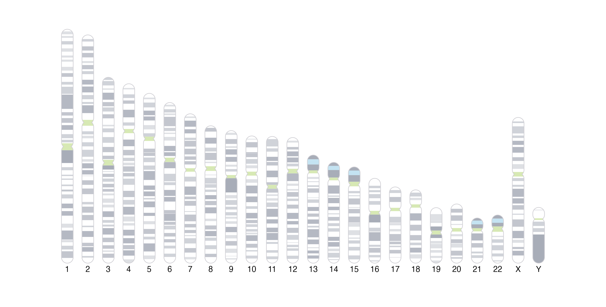
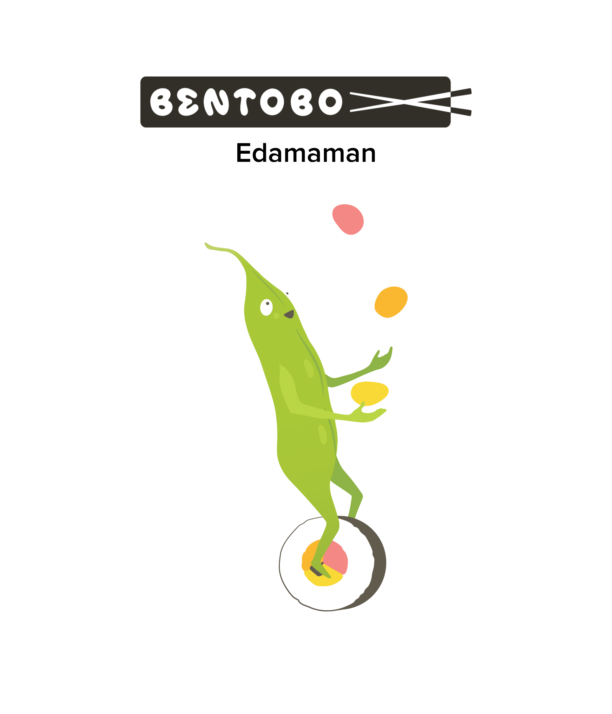

Beyond providing functions for plotting and arranging various genomic datasets, BentoBox also gives users the functionality to plot other elements within a BentoBox page layout:
In addition to a genomic axis label, it can also be useful to include an ideogram representation of a chromosome to give a broader context of the location of genomic data. UCSC Giemsa stain cytoband information for various genomic assemblies is included with BentoBoxData and must be loaded before plotting an ideogram (i.e.data("cytoBand.Hsapiens.UCSC.hg19")).
library(BentoBoxData)
data("cytoBand.Hsapiens.UCSC.hg19")
library(TxDb.Hsapiens.UCSC.hg19.knownGene)Ideograms can be plotted both vertically and horizontally:
library(GenomeInfoDb)
## Get sizes of chromosomes to scale their sizes
tx_db <- TxDb.Hsapiens.UCSC.hg19.knownGene
chromSizes <- GenomeInfoDb::seqlengths(tx_db)
maxChromSize <- max(chromSizes)
bb_pageCreate(
width = 8.35, height = 4.25, default.units = "inches",
showGuides = FALSE, xgrid = 0, ygrid = 0
)
xCoord <- 0.15
for (chr in c(paste0("chr", seq(1, 22)), "chrX", "chrY")) {
height <- (4 * chromSizes[[chr]]) / maxChromSize
bb_plotIdeogram(
chrom = chr, assembly = "hg19",
orientation = "v",
x = xCoord, y = 4,
width = 0.2, height = height,
just = "bottom"
)
bb_plotText(
label = gsub("chr", "", chr),
x = xCoord, y = 4.1, fontsize = 10
)
xCoord <- xCoord + 0.35
}
bb_pageCreate(
width = 6.25, height = 0.5, default.units = "inches",
showGuides = FALSE, xgrid = 0, ygrid = 0
)
bb_plotIdeogram(
chrom = "chr1", assembly = "hg19",
orientation = "h",
x = 0.25, y = unit(0.25, "npc"), width = 5.75, height = 0.3
)The cytobands can also be hidden if a more minimal ideogram is preferred:
bb_plotIdeogram(
showBands = FALSE,
chrom = "chr1", assembly = "hg19",
orientation = "h",
x = 0.25, y = unit(0.25, "npc"), width = 5.75, height = 0.3
)To highlight a specific genomic region on an ideogram, see the article An in depth look at plot annotations.
BentoBox also allows users to plot images and basic shapes and elements to further enhance and customize plot layouts. The functions bb_plotCircle(), bb_plotPolygon(), bb_plotRaster(), bb_plotRect(), bb_plotSegments(), and bb_plotText() provide an intuitive way to plot basic grid grobs without requiring any knowledge of grid graphics.
For example, we can include the BentoBox mascot Edamaman in our figures!
library(png)
library(showtext)
font_add(
family = "ProximaNova",
regular = system.file("extdata",
"proximanova-regular.otf",
package = "BentoBox"
),
bold = system.file("extdata",
"proximanova-semibold.otf",
package = "BentoBox"
)
)
showtext_auto()
edamaman <- readPNG(system.file("images",
"bento-edamaman.png",
package = "BentoBox"
))
logotype <- readPNG(system.file("images",
"bento-logotype-singleline-black.png",
package = "BentoBox"
))
bb_pageCreate(
width = 5, height = 6, default.units = "inches",
showGuides = FALSE, xgrid = 0, ygrid = 0
)
bb_plotRaster(
image = logotype,
x = 2.5, y = 0.25, width = 3.25, height = 0.5, just = "top"
)
bb_plotRaster(
image = edamaman,
x = 2.5, y = 5.5, width = 2, height = 4, just = "bottom"
)
bb_plotText(
label = "Edamaman",
fontsize = 20, fontfamily = "ProximaNova", fontface = "bold",
x = 2.5, y = 0.9, just = "top"
)
For more detailed usage of basic shape functions, see the function-specific reference examples with ?function() (e.g. ?bb_plotCircle()).
We saw how to add ggplots to BentoBox layouts in the vignette Introduction to BentoBox with the bb_plotGG() function. Beyond customizing the coordinates and dimensions of ggplots, bb_plotGG() can also be used to incorporate other grob and gtable objects. Thus, BentoBox allows us to easily mix and arrange most kinds of plot objects for ultimate customizability.